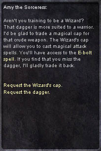

|
2002年11月13日
香港用戶端更新內容
1. 大家可以按CTRL + W切換開啟或關閉水底效果，在地面上也可以使用喔。
2. 新增/scratch（抓頭）, /cheer（打氣）, /bow（鞠躬）, /wave（揮手）指令（其實在上幾個版本已經加入了），但由於目前未更新新角色圖檔，因此只會有動一下的動作。
美國天堂新增新手伺服器
原文：Lands of Aden官方網站
美國天堂新增一個名為"Lands of Aden"（亞丁之土）的新手伺服器，現在為測試階段，此伺服器專為新手及打開北美市場而設，遊戲中的設定較容易，適合一些完全未接觸過天堂遊戲的玩家，而且它的設定不會完全跟隨韓國伺服器，美國方面可以就玩家的意見作出合理的調整，它與正式伺服器的主要分別如下：
1. 加入了直接的經驗值系統，以教導新手Lands of Aden的遊戲玩法。
2. 增加了新手任務，大家可以在隱藏之谷及歌唱之島找到給予任務及獎勵的NPC。
3. 木人較容易打中，同時亦會有更多經驗值。
4. 在亞丁世界中新增了首領級怪物，Cronos及Dark Mage回來了！
5. 在新手地區加入寵物飼養員。
6. 新增了新道具，他們的種類及用途有待大家發現。
7. 在新手地區回血及回魔速度將會加快。
8. 整個世界的怪物重新分佈。
9. 整個世界的道具掉下率重新分佈。
10. Lands of Aden是PvP伺服器。
11. 開啟了地獄系統，假如角色PK得太多，將會被傳送往地獄。
12. 調整了不同職業的防禦分別（俗稱Soft AC），對於大部分職業他們的防禦效能增加了。
13. 使用藥水的遲緩調整了，較高級的藥會比低級的藥水有較久的遲緩。
14. 重新平衡商人所賣的道具，部分道具的能力亦可能修改了。
15. 加入了不同的NPC，例如他們會提供鎧甲護持或變身的服務。
16. 新手地區的怪物不會拾取地上的道具。
17. 新手地區的怪物會給予更多正義值。
來源：Lineage Compendium

在新手伺服器上玩新法師會較容易，因為大家可以用匕首換取Wizard's Cap（巫師帽子），在戴上帽子後使用光箭魔法只需1MP！ |